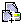

Este es lo mismo que Modo Regular, excepto que el modelo y genotipos pueden ser vistos.
Al comenzar el problema se te da una jaula o caja con una población de criaturas que fueron colectadas en el campo. Cada una de estas criaturas demuestra una de dos características diferentes de un caracter particulares (por ejemplo, si el caracter es Color del Cuerpo, las características podrían ser Cuerpo Rojo y Cuerpo Verde). Tu tarea es descubrir cómo estas características son heredadas. Tú determinas esto cruzando individuos y observando su descendencia. Entonces usas los datos obtenidos para deducir los modelos genéticos que determinan la herencia de estos caracteres. Tú tienes que decidir cuando tienes suficiente información para estar convencido de saber la respuesta - el programa no te dirá la contestación (excepto cuando está en Modo de Práctica).
Cuando comienzas un nuevo problema,VGLII escoge al azar uno de tres caracteres. Este escoge al azarmodelos genéticos. La gama de posibles modelos es configurada por tu instructor cuando se crea el tipo de problema; diferentes tipos de problemas pueden tener un mayor o menor número de posibles modelos y el Modo de Práctica puede ser abilitado o desabilitado para un tipo de problema particular. Ya que éste los asigna al azar,la misma característica puede ser heredada en diferentes formas en los diferentes problemas.
Luego, VGLII escoge características particulares de cada caracter y las asigna al azar a genotipos particulares. Una población de individuos con genotipos al azar es generado; estos individuos son puestos en la Caja 1.
Tu tarea es cruzar individuos de diferentes cajas y observar la descendencia resultante. De estos datos, debes determinar los modelos genéticos de cómo esas características particulares son heredadas.
Todos los problemas en VGLII envuelven modelos genéticos con genes que tienen dos o tres alelos. Basado en esto, hay algunas características que pueden variar:
Para correr el programa simplemente haga un doble clic en el archivo VGLIIx.x. Nota: Asegúrese de tener la carpeta de Problemas en la misma carpeta que el archivo VGLIIx.x. Los botones de la barra de herramientas son demostrados a continuación:

Cuando comienzes a trabajar con VGLII debes ver una barra de herramientas como ésta:
Del menú "Archivo", seleccione "Nuevo Problema" o simplemente haz clic en el botón que dice "Nuevo Problema" en la caja de herramientas
y debes ver una lista de archivos de tipos de problemas. Los archivos están enlistados
en orden de dificultad. Archivos adicionales pueden ser generados usando el programa VGLAdmin.
Selecciona el archivo y haz un clic en el botón de "Abrir".
Una vez comiences un problema, una ventana (Caja 1) se abrirá en la pantalla. Esta caja es el punto de comienzo para tu proyecto. Los organismos podrían ser (no necesariamente) homocigotos.


Cruze 1: Padres: Cinco machos rojos de la Caja 1 X Cinco hembras azules de la Caja 1 Descendencia: 11 Cinco/azul (en la Caja 2) 16 Cinco/rojo
En modo de práctica, la caja debe verse como ésta:
Este es lo mismo que Modo Regular, excepto que el modelo y genotipos pueden ser vistos.
 Tú puedes usar esta herramienta para encontrar problemas guardados previamente en los cuales tú podrías haber estado
trabajando. Para abrir el problema puedes seleccionar "Abrir Problema" desde el menú del
"Archivo" o simplemente hacer un clic en el botón "Abrir Problema" de la barra de herramientas. Una ventanilla
se abrirá para ayudarte a seleccionar el archivo. Navega hacia el directorio en el cual el
problema ha sido guardado. Selecciona el archivo y haces un clic en el botón de "Abrir". VGLII leerá el archivo
y abrirá el problema en la misma forma o estado* en el que fue guardado anteriormente.
Tú puedes usar esta herramienta para encontrar problemas guardados previamente en los cuales tú podrías haber estado
trabajando. Para abrir el problema puedes seleccionar "Abrir Problema" desde el menú del
"Archivo" o simplemente hacer un clic en el botón "Abrir Problema" de la barra de herramientas. Una ventanilla
se abrirá para ayudarte a seleccionar el archivo. Navega hacia el directorio en el cual el
problema ha sido guardado. Selecciona el archivo y haces un clic en el botón de "Abrir". VGLII leerá el archivo
y abrirá el problema en la misma forma o estado* en el que fue guardado anteriormente.
*estado - estado en este contexto se define como la colección entera de cajas creadas por
el usuario, incluyendo cajas que fueron creadas por el usuario pero se mantuvieron cerradas durante el
curso de este ejercicio. De manera sencilla, esto significa que cuando se abre un problema, VGLII
presentará todas las cajas creadas por el usuario hasta el punto en el cual fueron guardadas.
 Puedes usar esta herramienta para guardar el trabajo realizado en un archivo. Para guardar tu trabajo puedes
seleccionar "Salvar" desde el menú del "Archivo" o simplimente hacer un clic en el botón de "Salvar"
en la barra de herramientas. Una ventanilla se abrirá para ayudarte a guardar tu trabajo en un archivo en el directorio
escogido. Navega hacia el directorio en el cual tú quieres salvar tu trabajo.
En el espacio de "Nombre del archivo" escribe el nombre del archivo con el cual tu quieres salvar tu trabajo. Luego haz un clic en el botón de "Abrir". Esto crea y abre un archivo con el nombre
especificado en el espacio y guarda tu trabajo. El archivo debe tener una
extensión .wrk
Puedes usar esta herramienta para guardar el trabajo realizado en un archivo. Para guardar tu trabajo puedes
seleccionar "Salvar" desde el menú del "Archivo" o simplimente hacer un clic en el botón de "Salvar"
en la barra de herramientas. Una ventanilla se abrirá para ayudarte a guardar tu trabajo en un archivo en el directorio
escogido. Navega hacia el directorio en el cual tú quieres salvar tu trabajo.
En el espacio de "Nombre del archivo" escribe el nombre del archivo con el cual tu quieres salvar tu trabajo. Luego haz un clic en el botón de "Abrir". Esto crea y abre un archivo con el nombre
especificado en el espacio y guarda tu trabajo. El archivo debe tener una
extensión .wrk
 Es igual a "Guardar un Problema" excepto que éste crea una copia del archivo que ya ha sido creado pero con un nombre diferente.
Es igual a "Guardar un Problema" excepto que éste crea una copia del archivo que ya ha sido creado pero con un nombre diferente.
 Puedes usar esta herramienta para cerrar un problema en el cual has estado trabajando. Para cerrar el problema en el que has estado trabajando selecciona "Cerrar Problema" desde el menú "Archivo" o simplemente haz un clic
en el botón de Cerrar en la barra de herramientas. Se abrirá una ventanilla para confirmar tu decisión de cerrar el problema. Si seleccionas "Sí"
y si tienes trabajo sin salvar entonces la aplicación te sugerirá salvarlo.
Si seleccionas "Sí" entonces una ventanilla aparecerá para ayudarte a salvar tu trabajo en un archivo en el directorio escogido. Si seleccionas "No" la aplicación cerrará el problema sin salvar el trabajo.
Puedes usar esta herramienta para cerrar un problema en el cual has estado trabajando. Para cerrar el problema en el que has estado trabajando selecciona "Cerrar Problema" desde el menú "Archivo" o simplemente haz un clic
en el botón de Cerrar en la barra de herramientas. Se abrirá una ventanilla para confirmar tu decisión de cerrar el problema. Si seleccionas "Sí"
y si tienes trabajo sin salvar entonces la aplicación te sugerirá salvarlo.
Si seleccionas "Sí" entonces una ventanilla aparecerá para ayudarte a salvar tu trabajo en un archivo en el directorio escogido. Si seleccionas "No" la aplicación cerrará el problema sin salvar el trabajo.
Para cruzar dos organismos selecciona un organismo macho y uno hembra de cualquiera de las cajas abiertas (pueden ser de diferentes cajas). Para cruzar estos organismos y crear la descendencia que ellos producirán, selecciona "Cruze Dos" de el menú de "Utilidades" o haga un clic en el botón de "Cruze" en la barra de herramientas. Esto creará una nueva caja que contiene los descendientes de los dos padres usados en este cruze.
 Para imprimir la población hallada en el campo (Caja 1) y todas las cajas generadas,
haz un clic en en botón de Imprimir (demostrado a la izquierda), o seleccione "Imprimir trabajo" desde el menú de "Archivo". Quizás necesites programar la impresora; selecciona "Configurar página" del "Archivo".
Para imprimir la población hallada en el campo (Caja 1) y todas las cajas generadas,
haz un clic en en botón de Imprimir (demostrado a la izquierda), o seleccione "Imprimir trabajo" desde el menú de "Archivo". Quizás necesites programar la impresora; selecciona "Configurar página" del "Archivo".
Puedes usar esto para guardar tu trabajo en un archivo en un formato fácil de imprimir; este archivo puede ser mostrado en cualquier web-browser y muchos procesadores word. Para imprimir para un archivo seleccione "Imprimir a un archivo" desde el menú del "Archivo" o haz un clic en el botón de "Immprimir a un archivo" en la barra de herramientas. Esto debe abrir una ventana la cual te permite darle un nombre al archivo y el destino escogido. Una vez se le da un nombre al archivo y has decidido la localización haz un clic en el botón de "Imprimir". Tu trabajo será salvado en un formato fácil de imprimir en un archivo. El archivo debe tener una extensión .html.
Seleccionando una o más Cajas y escogiendo del "Crear resumen " del menú de Utilidades, puedes hacer que VGLII cuente el número de organismos de cada tipo hallado en las cajas seleccionadas.
Primero, haz un doble clic en cada una de las cajas para seleccionarlas para el resumen; su borde interno se tornará rojo lo cual demuestra que han sido seleccionadas. Puedes deseleccionar la caja escogida haciendo un doble clic en ésta; también puedes quitar la selección de todas las cajas escogiéndolo "Deseleccionar todo" desde el menú de utilidades.
Una vez has seleccionado un grupo de Cajas, escoge "Crear resumen Chart" del menú de Utilidades y verás algo como esto:

La línea del tope demuestra que éste fue un resumen de las cajas 7, 8, 9, 10, & 11.
Estos fueron producidos de los cruzes de dos padres heterocigotos; entonces, deberíamos esperar una razón 3:1.
La razón observada 120:26.
Puedes escoger cuales caracteres resumir al seleccionar los caracteres apropiados en el tope, seleccionando los Caracteres apropiados en el tope de la ventana.
Cerrar/Reabrir Cajas
Puedes usar esta herramienta para cerrar/reabrir cualquiera de las cajas creadas hasta ahora. Seleccione "Cajas" del menú de "Utilidades". Una ventana debe abrirse con un listado de todas las cajas creadas hasta ahora. Las que están visibles será verificada. Haga un clic en la opción de "Visibilidad" al lado de cada listado de cajas para hacer esa Caja visible/invisible.
Puedes usar esta herramienta para reorganizar las cajas creadas en una forma ordenada. Selecciona "Reordenar Cajas" del menú de "Utilidades". Todas las cajas visibles deben ser alineadas una bajo la otra y de izquierda a derecha.
Para obtener más detalles y un diagrama detallado sobre el fenotipo de los organismos en una caja, puedes hacer un clic en la imagen del fenotipo demostrado en la caja. Esto debe abrir una ventana con una imagen agrandada y más detallada del organismo destacando el fenotipo en cuestión. Nota que estas imagenes son sencillas; solo están disenadas para ilustrar como el fenotipo combinado podría verse. Uno es demostrado a continuación:

 Para obtener más detalles sobre la aplicación VGLII puedes seleccionar "Acerca de VGLII"
del menu "Ayuda"
o simplimente haga un clic en el botón "Acerca de VGL". Esto debe abrir una ventana de información.
Para obtener más detalles sobre la aplicación VGLII puedes seleccionar "Acerca de VGLII"
del menu "Ayuda"
o simplimente haga un clic en el botón "Acerca de VGL". Esto debe abrir una ventana de información.